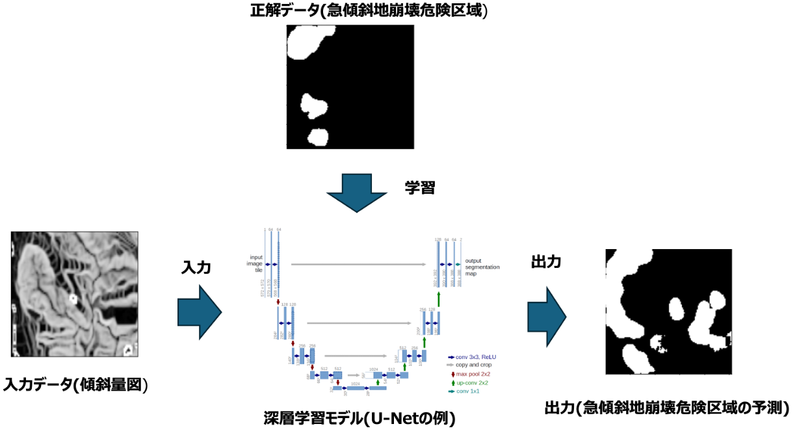

本研究では、深層学習を用いて土砂災害リスクを予測し、ハザードマップを生成する手法の開発に取り組んでいる。 近年増加する自然災害に対し、従来のハザードマップ作成方法では対応しきれない課題があり、 より動的かつ柔軟にリスクを評価できる手法が求められている。 地形データなどの複数の情報を統合し、災害発生リスクを高精度に可視化することで、 防災・減災への貢献を目的としている。
土砂災害警戒区域を指定するにあたって、土砂災害防止対策基本指針の作成、基礎調査の実施が必要になり簡単ではない。 特に基礎調査において土砂災害防止法によって、概ね5年毎に土砂災害のおそれの箇所について必要な基礎調査を行うこととされており、 専門家の手作業で地形改変が確認される箇所については、現地での詳細調査を行なっており、かなりの時間・費用・労力がかかる。 増加する自然災害に対し、土砂災害警戒区域を更新するために、労力やコストを削減することが喫緊の課題となっている。
本研究では、地形データなどの多様な情報を統合し、 深層学習モデル（U-Net）を用いて崩壊危険区域の抽出を行なった。 図1に入力データを標高データとした単一入力モデルの際の本研究の入出力を示す。 また、精度向上を図るため地理情報である標高データと航空写真などのマルチインプットによるマルチエンコーダ学習によって、 地形の傾斜や水の流れといった空間的特徴を学習できるモデル構築を行った。
また、データの偏りや不足による精度低下を防ぐため、 データ拡張や前処理の工夫を行い、モデルの汎化性能を向上させた。 特に、セグメンテーションモデルでは画像境界付近の精度が悪化するため、その領域を外してスライドウィンドウさせて統合することで 高精度な広域のハザードマップを生成した。

図1：U-Netへの入出力図
複数データを統合した深層学習モデルにより、 災害リスクの空間的分布を高精度に予測することが可能となった。 従来手法では捉えきれなかった細かな地形特性を反映したリスク評価が実現できた。
また、可視化されたハザードマップは、 防災対策や意思決定に活用可能な形で提示することができ、 社会実装に向けた有効性を確認した。
本研究を通じて、深層学習モデルの精度向上だけでなく、 データの質や前処理、設計が結果に大きく影響することを学んだ。
また、防災分野においては、単に予測精度が高いだけでなく、 結果の解釈性や説明可能性が重要であることを実感した。 そのため、今後は因果関係の理解や説明可能AIの導入を視野に入れ、 より実社会で活用されるモデルの構築を目指している。
← 戻るIn this research, I am developing a method for predicting landslide disaster risks and generating hazard maps using deep learning. As natural disasters have increased in recent years, conventional hazard map generation methods have become insufficient, creating a need for more dynamic and flexible approaches to risk assessment. By integrating multiple types of information, including terrain data, this research aims to visualize disaster risks with high accuracy and contribute to disaster prevention and mitigation.
Designating landslide hazard areas requires the creation of basic disaster prevention policies and detailed field investigations, making the process highly complex. In particular, under the Sediment Disaster Prevention Act, fundamental investigations of potentially hazardous areas must generally be conducted every five years. Areas where terrain modifications are detected require detailed on-site inspections by experts, resulting in significant costs, labor, and time. As natural disasters continue to increase, reducing the labor and cost required to update landslide hazard areas has become an urgent issue.
In this research, I integrated various types of information, including terrain data, and used a deep learning model (U-Net) to extract landslide risk areas. Figure 1 shows the input and output of the study when using elevation data as the single input to the model. In addition, to improve accuracy, I developed a multi-encoder learning model that integrates multiple inputs such as elevation data and aerial imagery, enabling the model to learn spatial features including terrain slope and water flow patterns.
Furthermore, to prevent accuracy degradation caused by data imbalance and insufficient data, I applied data augmentation and preprocessing techniques to improve the model’s generalization performance. In particular, because segmentation models tend to show lower accuracy near image boundaries, I excluded those boundary regions and integrated predictions using a sliding-window approach, enabling the generation of highly accurate large-scale hazard maps.
Figure 1: Input and output structure of the U-Net model
By integrating multiple types of data into a deep learning model, it became possible to predict the spatial distribution of disaster risks with high accuracy. The proposed method successfully captured detailed terrain characteristics that conventional approaches could not fully represent.
In addition, the generated hazard maps could be presented in a form applicable to disaster prevention measures and decision-making, confirming the potential for real-world implementation.
Through this research, I learned that improving deep learning model accuracy depends not only on the model architecture itself, but also heavily on data quality, preprocessing, and dataset design.
Furthermore, in the disaster prevention field, I realized that interpretability and explainability are just as important as prediction accuracy. Therefore, I aim to further improve the model by incorporating causal analysis and explainable AI techniques, with the goal of creating systems that can be more effectively utilized in real-world society.
← Back